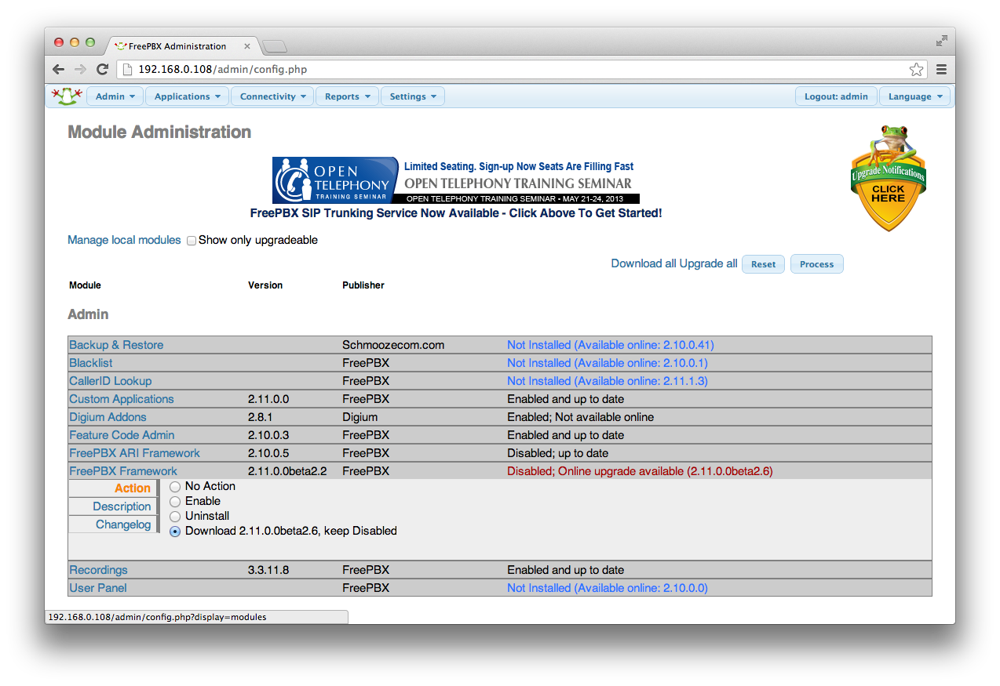

Thank you for downloading AsteriskNOW. This Linux distribution has been carefully customized and tested with Asterisk, and installs all of the packages needed for its use. It is the officially recommended development and runtime platform for Asterisk and Digium hardware, including Digium phones.
This guide provides a brief overview of installation, configuration, and maintenance of your system.
More information is available at http://wiki.centos.org/.
Please report any bugs at https://issues.asterisk.org/jira
Installation
- Burn the AsteriskNOW DVD image to DVD disc and then boot from the DVD to begin the installation process.
- If you are unfamiliar with burning disc images, the Ubuntu community has a great Burning ISO Howto available at https://help.ubuntu.com/community/BurningIsoHowto.
- If you are unfamiliar with booting to DVD, the Ubuntu community has a wonderful Boot From DVD HOWTO available at https://help.ubuntu.com/community/BootFromCD.
- After booting from the AsteriskNOW DVD, you will be presented with the following screen and options for an installation with, or without the FreePBX web interface. This QuickStart assumes that the FreePBX web interface has been installed. To do this, selection option 1 and press <ENTER>:
- During the installation, you are first presented with an option for setting the system Time Zone:
** Choose the location that is nearest to you and move to the next screen.
- Next, you will be prompted to set a root password:
- Then, you will choose your Hard Disk Layout:
- Now, sit back, relax, have a cup of coffee and wait while the system is installed. This will take approximately 15-30 minutes. You will see a progress bar indicating the installation status.
Once installation has completed, you will be prompted to reboot into your installation:
- After the system reboots you will see this screen:
Congratulations! You have successfully installed AsteriskNOW.
- Now, before you move on, it is important to update your AsteriskNOW system to the latest Linux packages. To do this, use the yum utility "yum." Perform a "yum update"
** If new packages are available for installation, the utility will ask permission to install them. And, if the utility has not been run before, it may ask permission to accept a yum key. You should accept both to stay up to date.
- You are now ready to move on to configuration of AsteriskNOW from the FreePBX web interface.
FreePBX Configuration
- To configure your system using FreePBX, open a web browser on another PC to the address specified during boot, e.g. "To configure AsteriskNOW with FreePBX, point your web browser to http://xx.xx.xx.xx/. If successful, you will be presented with the FreePBX main screen:
- From here, we want the "FreePBX Administration" link. Click it, and you will see the FreePBX login screen:
- Having successfully logged into FreePBX, you will see the FreePBX dashboard:
- Next, we will change the default admin password. This is imperative! Failure to do this is inviting disaster. The importance of doing this CANNOT be understated.
- First, visit the Admin tool
- Next, select admin from the right column
- Then, change the admin password
- First, visit the Admin tool
- Finally, one should update any out of date modules on the system. To do this, we will visit the Module Admin tool:
- Click the Check Online button and you will see any out of date modules
- To update a module, click it, and then select the Download option
 - Finally, press the Process button and follow the instructions to complete the module update.
- Click the Check Online button and you will see any out of date modules
Updating, Querying, Removing Packages
After completing installation of AsteriskNOW, all of the packages for running Asterisk are installed. However system updates are often available.
AsteriskNOW contains several yum repositories in addition to the ones provided by CentOS. These are asterisk-current/asterisk-tested and digium-current/digium-tested. The asterisk- repositories contain packages for Digium-provided Open Source software (such as Asterisk, libpri, and DAHDI). The digium- repositories contain non-free or commercial software (such as the Digium Phone module for Asterisk, G.729 for Asterisk, Fax For Asterisk, and the HPEC echo cancellation module). This allows you to install additional software and to stay up to date with the latest changes.
Packages can be installed or removed by using `yum install <package>` or `yum remove <package>`. Updates should be regularly installed by using `yum update`. For a very full list of available and installed packages, you can use `yum list | less`. For more information about Yum, visit http://yum.baseurl.org/wiki/YumCommands or type `man yum`.
{kind=link}
{kind=link}
{kind=link}
{kind=link}
{kind=link}
{kind=link}
{kind=link}
{kind=link}
{kind=link}
{kind=link}
{kind=link}
{kind=link}
{kind=link}
{kind=link}
{kind=link}
{kind=link}
{kind=link}